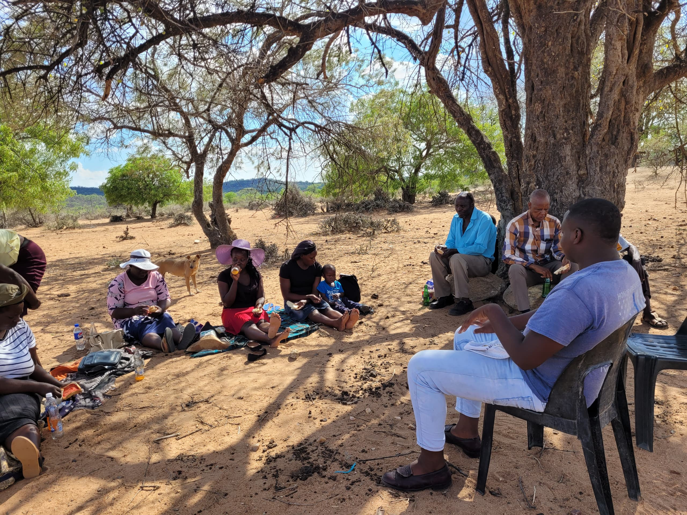
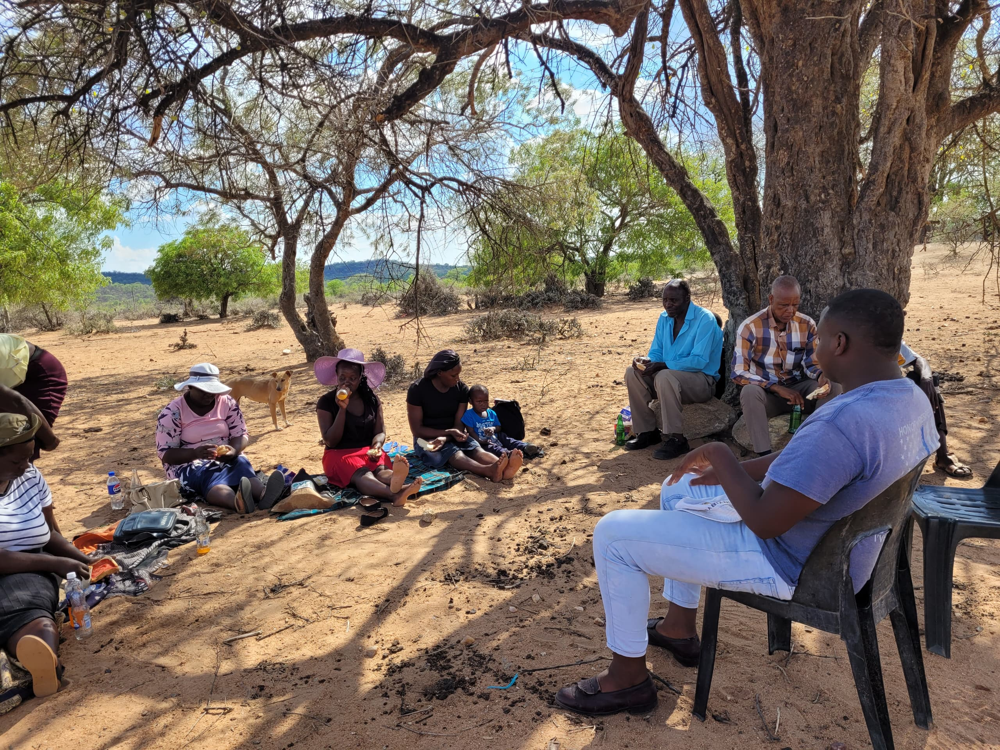

GUYU CHELESA SLM PILOT SITE PROJECT
ABOUT THE PROJECT
Introduction
- Our focus is the Guyu-Chelesa Pilot Site located in Gwanda District, Zimbabwe, which encompasses six villages and has a total population of 10,266 people. The site covers an area of 180,011 hectares.
- Objective: To carry out Community-based Sustainable Land Management demonstrations, reduce sedimentation, and improve land productivity.
Location Map
Target Area
- Location: Guyu Ward (Ward 14), Gwanda District, Matabeleland South Province, Zimbabwe.
- Characteristics: Small-scale farmers, subsistence crops, manual land management practices.
Target Villages
- Sengezane
- Paye
- Nhlamba
- Sezhubane
- Bethel
- Ntanye
Activities Implemented
Sustainable Land Management Activities
- Stone bunds
- Silt traps
- Dead levels contours
- Brush woods
- Half moons
Achievements
- Increased community knowledge and awareness of SLM activities.
- Community engagement fostering a sense of ownership and stewardship for land.
- Gender awareness in the community.
- Improved soil health by reducing water runoff.
- Reduction in soil erosion and soil retention.

 
